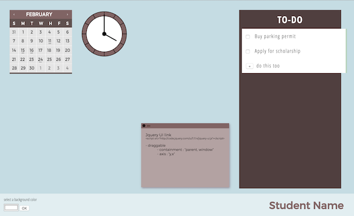
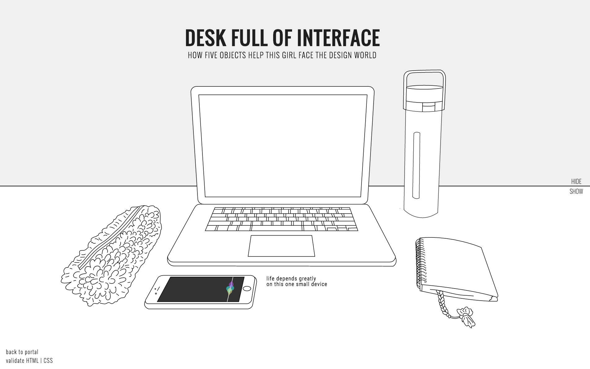

blog entries
23 February 2016
The UX Book
Chapter 9 Summary
Chapter 9 covers the second half of the design phase in what the authors call, the “macro view of lifecycle iterations in design (fig 9.2).” Chapters 7 and 8 talk about the beginning phases like ideation, conceptualizing ideas, and iterating those designs. Chapter 9 goes into the process of presenting and refining those ideas in the steps called, intermediate and detailed design.
Intermediate design is the stage where designers should take their conceptual ideas and start detailing them, getting them ready to present to clients and fellow colleagues. This entails methods such as wire framing and creating custom style guides. Wireframes are important because they visualize the layout and navigation structure of the project for the client. The client can then, focus mainly on that interactivity before tackling the design details that will be in the custom style guide. The custom style guide would fall under detailed design and is also monumentally important because in large projects a designer will often be working with many other people, and all those other people need to be on the same page as the designer. It is a way to standardize the style (fonts, colors, shapes, etc.) so when each individual piece of the project comes together, it will be consistent.
Some other methods that a designer can use, which fall under this stage of design, are interactive and participatory design. Interactive design is important because it becomes like a guide for the back-end designers a front-end designer like us would work with. It tells the programmer exactly how you want the elements to behave and feel like. Participatory design is interesting because it takes the users and has them layout and design how they would like the interface to be. It is done by providing paper prototypes and crafting supplies for the user to play with and rearrange. This would be beneficial for interactive design and really making a interface user-friendly.
---
Knowledge!
11 February 2016
Exercise Five
Working with jQuery Libraries

Doing this exercise solidified my more practical idea for the final project, the transfer tool. Except instead of a tool catered specifically for transfer students I decided to do a more general tool that could be used for reaching any type of goal.
I decided to use jQuery UI for its draggable and sortable features. The interface for my organizational tool is laid out like a Macintosh dashboard and I want the user to be able to customize it to their liking by positioning/dragging little widgets wherever they like. Also, checklists, which are vital to planning, need to be able to be sorted in order of the users preference.
The library itself is easy to use. The syntax is straight forward. To make an item draggable you use .draggable() and to sort, sortable(). I only used these two features but those two features alone add a lot of interactivity for the user. I would definitely recommend this library because it's easy to use and does a lot.
LINK TO JQUERY UI
---
Interaction!
3 February 2016
Story Telling

I finally got the hover/click combo to work! Using mouseover and mouseout, combined with the newly discovered event unbind, I was able to get the image to stay after the click.
I wanted to make each of the objects interactive by making it reactive to the mouse, whether its clicked or if the user just hovers over. Ideally, the clicks would have worked more like an on/off switch and played a sound bit upon click but.. maybe in the next revision. To complete the stories I used three different versions of each image. First, the onload line image. Then, the lightly colored version for the hover, and finally, a full-color, slightly animated version for the click.
At this point i've run out of time and have to submit it the way it is. The show feature isnt working the way I want it to but, I look forward to coming back to all these exercises and polishing them up.
---
Yay coding!
28 January 2016
Time is on my Side

I attempted to make my site engaging by using illustrative icons instead of text. Interactivity suffered because I couldn't get jQuery to work the way I wanted to. I think it's still interactive because of the color changes and bubble appearance of hovers.
---
More to learn!
23 January 2016
Forms!

I would say that Google Search is my most used web-based form. I Google anything I question or want to learn. It's funny, I never thought of the index page of Google.com as a form before but, now that we've studied it and learned how to code it it's obvious. The design is simple and clear: plenty of white space with the main form input centered on the page. The page is also everchanging so that you never get bored of it. On holidays or on other particularly special days, Google will have special banners done by various artists that are usually interactive.
link to og slideshow
---
You're great Google!
14 January 2016
My Favorite Interface

Of course, my favorite interface is my iPhone. My entire life depends and is possible because of this interface. It's how I keep track of my life, where I am in my life, and the people in my life. iPhones keep everyone constantly connected to the world through various connections to outside networks, and in that way iPhones become everyones television, newspaper, weather report, source of entertainment, and so much more.
In terms of design, it is a simple and easy to use interface on a sleek and minimally designed hardware. Apple started the craze for touch screen phones and the emergence of a visual language of icons. Apple took the mundane, numbers-and-words-only type of interface, and started a new standard of aesthetically pleasing and fun interface that stole the hearts of the world. Today, you could really say that most people own an iPhone or some kind of Apple product, if not, own almost all the products in their line of personal computers/interfaces. Apple’s interface design changed the face of technology and they continue to create new standards for the rest of the technological world. As they will continue to be innovators, I will continue to use/buy their interfaces.
---
Thanks Steve Jobs!